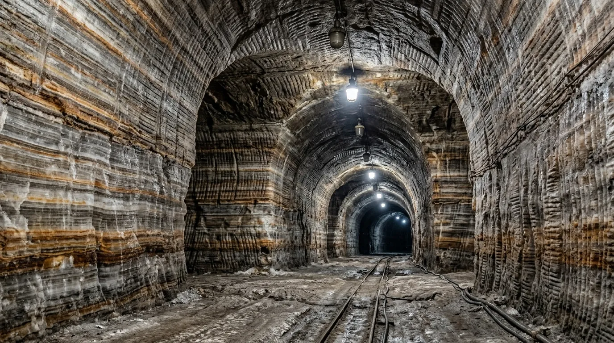
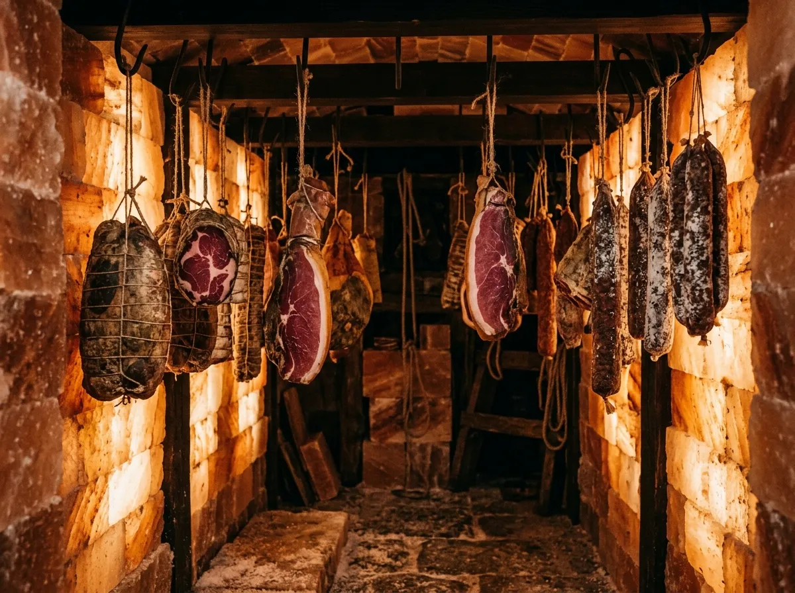
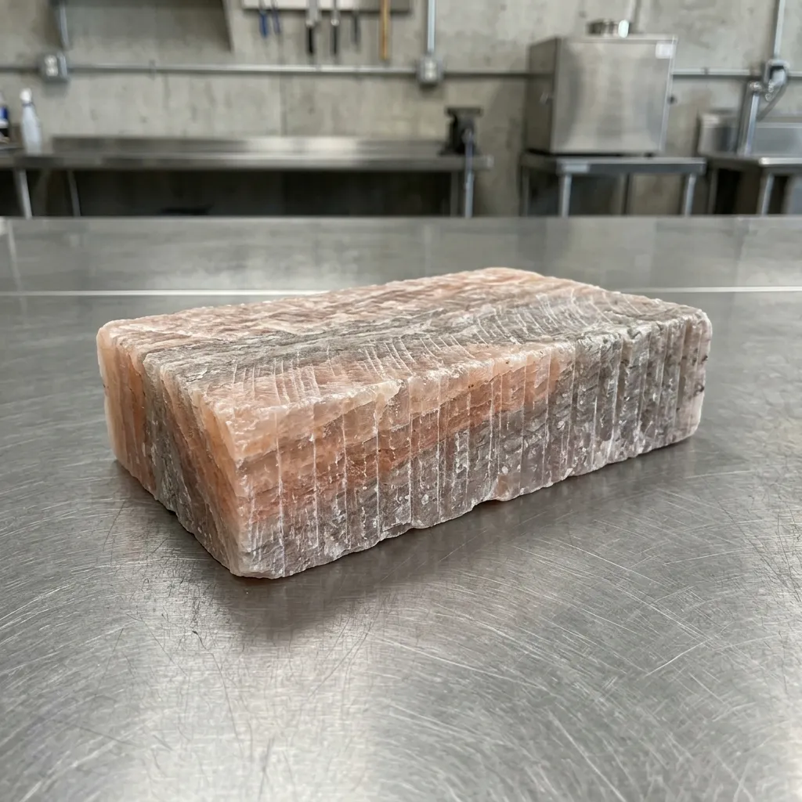
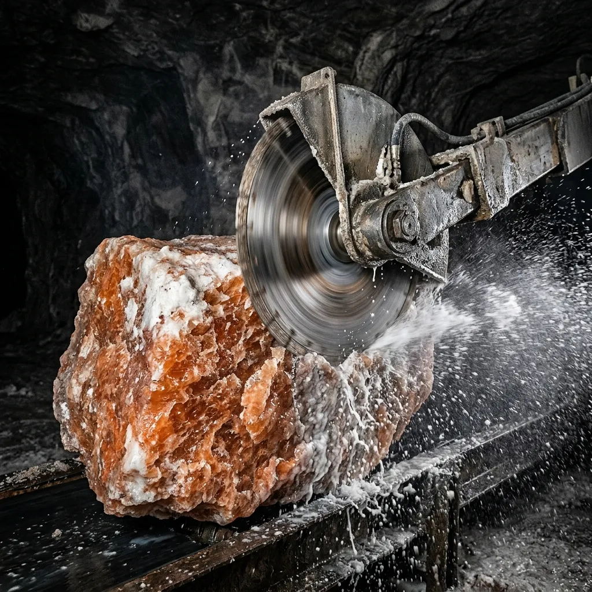
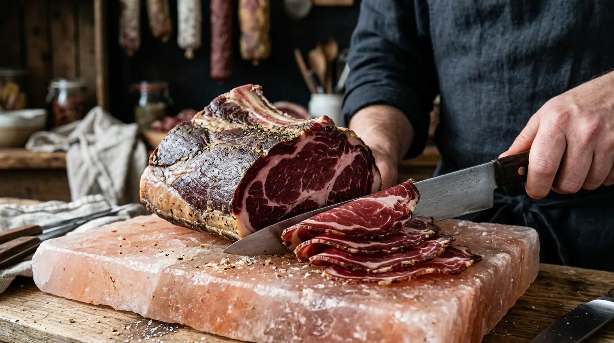
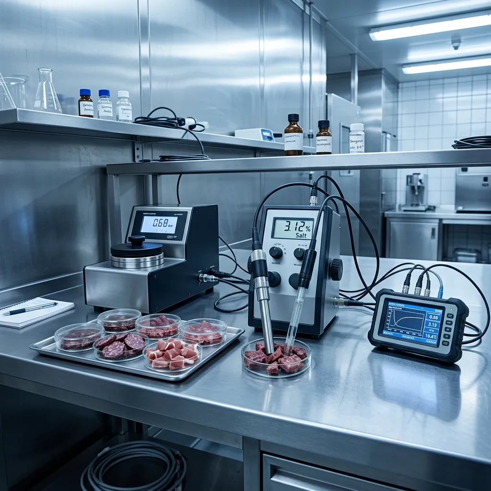

Provenance: The Northwich–Devonport Subterranean Doctrine

In October 2021, naval victualling officers from Devonport faced severe shelf-stability failures in commercial chilled meat shipments destined for long-range Atlantic patrol deployments: ambient electrical fluctuations and condenser coil freeze-overs caused intermittent humidity blooms that triggered surface slime on dry-aged beef sides. Simultaneously, fourth-generation brine extractors at the Winsford salt mine were cutting through a 220-million-year-old bed of pristine Triassic halite displaying less than zero point zero two percent native moisture content.
The two groups pooled operations to construct a zero-power carcass curing cell. By lining subterranean limestone vaults with solid, interlocking five-hundred-millimetre salt masonry blocks, we eliminated the need for mechanical compressors entirely. The massive halite face acts as a natural desiccating engine, drawing unbound water vapor out of hanging primal cuts while maintaining a steady 13.5°C thermal baseline governed entirely by subterranean geothermal equilibrium.

Today, every curing block and salt-lined casing shipped from our Cheshire depot adheres to this rigid military standard. Our halite blocks do not sweat, crumble, or harbour surface mould. When installed in commercial curing rooms, they drop the water activity of surrounding proteins below zero point eight five within forty-eight hours, locking in deep savory glutamates and guaranteeing indefinite stability without chemical nitrates.
Halite Ingot & Vault Cask Registry
Heavy, dense mineral blocks and cured proteins engineered for commercial food operations. Exacting physical standards guarantee repeatable desiccating action across multiple curing cycles.

Mark VIII Halite Slab
600×300×100 mm | 38 kg
£285.00

Interlocking Salt Masonry Brick
200×100×65 mm | 4.2 kg
£45.00

180-Day Vault-Cured Brawn Primal
Bone-in loin | aw = 0.81
£580.00

Micro-Particulate Flake Keg
25 kg drum | 99.8% NaCl
£115.00
Material Density
2.16 g/cm³ Solid Phase Halite
Moisture Content
≤ 0.02% Native Humidity
Subterranean Atmospheric Control Protocol
Natural subterranean physics consistently outperforms fallible electrical cooling equipment. Our vaults utilise a four-phase physical control cycle to maintain absolute equilibrium.
- Phase 01: Deep Shaft Air Induction Low-velocity filtered intake draws ambient surface air through 140 metres of narrow shaft geometry, stabilising temperature drops prior to chamber entry.
- Phase 02: Oolite Limestone Strata Buffering Calcium-moisture exchange occurs naturally as air passes through porous oolite rock, pre-conditioning humidity levels.
- Phase 03: Aerosol Halite Saturation Ambient microbial suppression activates as micro-particulate salt aerosolises within the main vault, rendering the atmosphere hostile to spoilage vectors.
- Phase 04: Hermetic Container Extraction Processed primals and slabs undergo moisture-barrier wrapping immediately upon egress to preserve internal equilibrium during transit.
Physical Preservation Matrix
Empirical superiority in moisture extraction, structural integrity, and shelf life over legacy chilling operations.
| Method | Initial 48h Moisture Loss (%) | Water Activity (aw) | Secondary Spoilage Risk | Power Dependency (kWh/tonne) | Shelf-Life at Ambient (Months) |
|---|---|---|---|---|---|
| Sub-Oolite Halite Curing | 14.5% | ≤ 0.85 | Negligible | 0.00 | Indefinite |
| Mechanical Blast Chilling | 4.2% | 0.96 | High (Compressor Failure) | 340.00 | 0.5 |
| Chemical Nitrite Curing | 8.1% | 0.91 | Moderate | 12.50 | 6 |
| Surface Aging (Conventional) | 6.0% | 0.93 | High (Humidity Bloom) | 110.00 | 2 |
Commercial Fleet Requisitions & Guild Tiers
Scalable procurement from palletised single units to full-vault lining contracts. We supply craft butcher syndicates, sovereign preservation reserves, and industrial food laboratories.
Artisan Cure Cell Pack
0.5 tonne salt bricks + mortar.
Ideal for independent cure houses requiring rapid moisture extraction in confined footprints.
Commercial Facility Outfitting
5–20 tonnes with on-site installation oversight.
Complete mechanical replacement. Eliminates reliance on condenser coils and electrical grids.
Sovereign Reserve Curing Allotment
Leased deep-mine cellar space.
Secure, subterranean aging capacity monitored and managed directly at the Winsford rock face.
Depot Testimonials & Logged Station Records
Verified reliability under demanding operational standards across military and commercial sectors.
"Zero electrical draw and zero surface rot during a six-month Atlantic deployment. The halite cell outperformed our blast chillers significantly."— Royal Navy Logistics Warrant Officer
"We lined our entire Cumbria facility with the 500mm masonry blocks. Our pork primals hit a safe water activity threshold in half the traditional time."— Executive Curemaster, Cumbria
"FSA compliance was straightforward. The documented moisture draw and pathogen suppression of the Sub-Oolite blocks satisfied all health inspectorate requirements."— Director, FSA-registered Wiltshire Beef Curing Plant
aw ≤ 0.82 Verified Integrity
Zero Electrical Cooling Required
Technical Halite & Transport FAQ
Authoritative guidance for butchers, food safety officers, and warehouse operators regarding handling and maintenance.
- Are the halite blocks surface washed or dry scraped?
- Strictly dry scraped. Water washing dissolves the crystalline matrix and introduces unbound moisture into the curing cell.
- What are the room humidity thresholds?
- Ambient humidity must remain below 75% RH. Sustained operation above this threshold risks structural dissolution and compromised osmotic pull.
- Do the blocks hold food-contact certification?
- Yes. All dispatched masonry complies strictly with EC 853/2004 regulations for direct food-contact surfaces.
- What are the standard pallet freight limits?
- A standard shipping pallet holds a maximum of 1,200 kg. Exceeding this mass risks pallet fracture during offloading.
- How is the moisture barrier maintained during transit?
- Blocks are sealed in hermetic polymer shrink-wrap immediately upon surfacing to prevent premature atmospheric absorption.
- Can worn salt blocks be re-faced?
- Yes. We recommend re-facing heavily scored blocks with diamond-tipped planes to expose a fresh, highly active crystalline layer.
Direct Requisition Terminal
Direct supply from the Cheshire pit head with fast road freight routing. Enter logistical requirements below.
Logistics Desk
Shaft 3 Depot
Bostock Road, Winsford
Cheshire, CW7 3PD
Telemetry Line: +44 1606 592 100
STATUS: DISPATCH READY